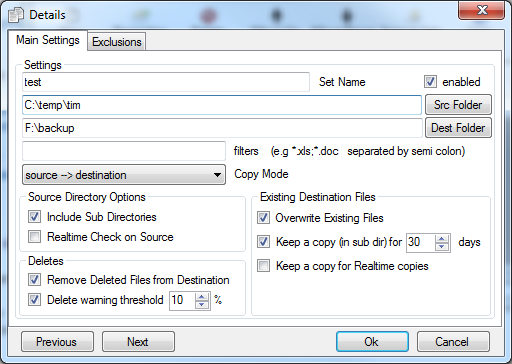
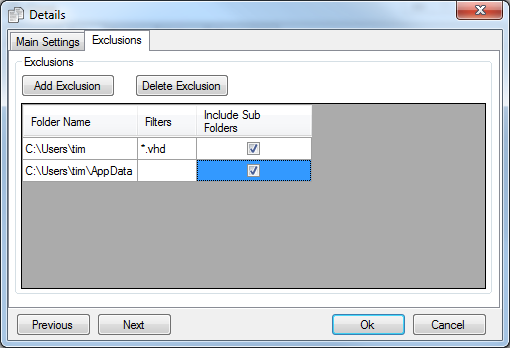

Set Configuration Screen
The configuration screen shown below enables you to define a set of files to be backed up. It also allows you to configure how files that already exist in the destination directory should be dealt with. For example you may want to keep old versions of a file, in this case you can define how long these files should be kept for.

The various options on the screen are described below :-
Set Name :- This defines the name of the set. This name is displayed on the main Configuration Screen The set name can only be any sequence of characters including spaces
Src Folder :- This is the directory that you want to be backed up. The button opens a windows explorer type dialog box to navigate to the directory you want to select, then click the OK button.
Dest Folder :- This is the directory were the source files specied above will be copied to. The button opens a windows explorer type dialog box to navigate to the directory you want to select, then click the OK button.
Filter :- If you only want to backup a single file or a specific type of file then the filter can be used to define these files. For example if you are only want to backup word documents in the "My Documents" folder then you can specify a filter of *.doc. If you would also like to backup a particular file you can specify the file name in the filter, e.g. :- accounts.xls;*.doc This filter would backup all word documents and the file accounts.xls. Filters should be separated by ; (semi-colon). Any number of filters can be used.
Copy Mode :- This option should be set to source --> destination, which it is by default. However if you need to recover files from your destination drive you can "swap" the way this set works. This will update your source folder with files from your destination drive.
Source Directory Options
Include Sub Directories
This option allows you to include all the sub-directories under the main directory selected in the "Source Directory or file" described above.
Realtime Check on Source
Selecting this option allows creates a "file system watcher", this basically watches for any updates to files in your source folder. As soon as these updates occur the file is copied immediately and does not have to wait until the next timed or adhoc backup.
Deletes
Remove Deleted Files from Destination will delete any files from the destination folder that have been removed from the source folder. This may be useful in the following scenarios. 1) if you have restructure your source folder. Otherwise you will end up with duplication in your destination folder. 2) If you want to keep you destination folder exactly in sync with the source folder.
It may be desirable to keep copies of files in the destination folder even if they have been removed from the source folder. For example to prevent against accidental deletion from the source folder.
Delete Warning Threshold allows you to specify a ratio of files that it is acceptable to delete without any warning. For example of this option selected and the value is set to 10% it would allow 10 files to be deleted when there are 90 files in the source folder. This option can be unselected so you are never warned /about deletions, regardless of the number of files being deleted. If you select this option and have a threshold value of 0% you will be prompted each time clone attempts to remove files. This option and the value are intended as a safety net to warn you if a large number of deletions are about to happen. I would recommend that this option is left on.
Existing Destination Files
These options determine what Clone does with files that are already present in the destination directory, e.g. if a file already exists but a newer version needs to be copied into the destination directory what should be done with the file about to be overwritten.
- Overwrite files in destination directory. If this option is chosen then files in the destination directory will be overwritten by files in the source directory. If this option is unchecked, files will not be overwritten and any subsequent changes to the source file will not be backed up. Uncheck this option with caution.
- Keep a copy (in a sub dir) This option allows you to keep the existing file that is in the destination directory. The file is moved to a sub-directory called "#clone#arc#". The orginal filename is appended with a version number which is just a sequence beginning with 1, e.g. if the original file name is cv.doc the archived versions will be cv.doc.1 cv.doc.2 etc .....
- Keep copy Days option This enables you to specifiy how long the archived files in the sub folder should be kept for. This is based on the last modified date of the original file. After x days (after the file was last modified) the file will be removed from the archive folder. If this is set to 0 (zero) then then all archived files will be kept indefinitely
- Keep copy for Realtime copies Realtime copies will only keep a copy of the original file if this option is set, as well as the Keep Copy option above
Exclusions
The following screen is displayed on the 2nd tab on this screen. This allows you to exlcude particular files and folders from your set. In the example below all files with a vhd extension are excluded from the backup. Also all files in the Video folder will not be included. The filters operates in the same way as the filters box described above.

|